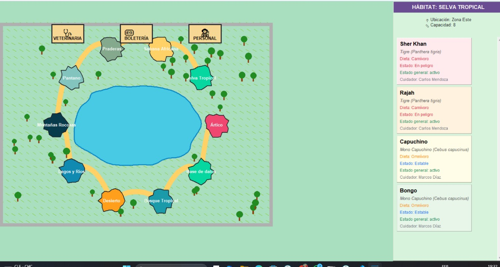
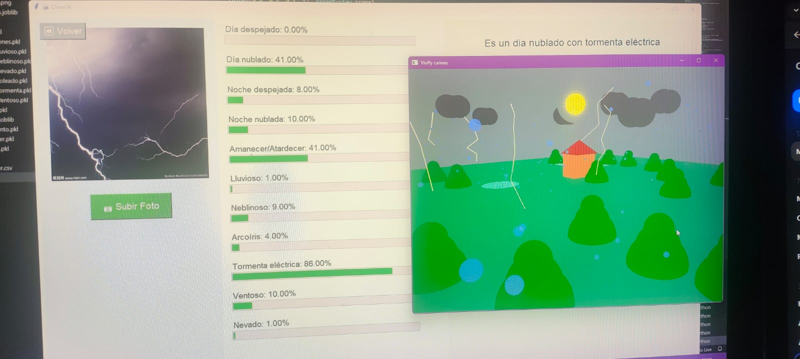

Gestión de Zoológico (PostgreSQL + Python)

Proyecto académico que consistió en el diseño e implementación de una base de datos empresarial para la gestión integral de un zoológico. Incluye modelado de datos en PostgreSQL con más de 10 tablas normalizadas (animales, hábitats, cuidadores, visitantes, boletería, etc.), funciones y procedimientos almacenados con manejo de excepciones, triggers para auditoría y seguridad con cifrado pgcrypto. También se desarrolló una interfaz en Python (Tkinter) conectada a la base de datos para realizar operaciones CRUD, generar reportes y mostrar un mapa interactivo estilo videojuego con la distribución del zoológico.
Algoritmos de Grafos con Visualización (Python + Tkinter)

Implementación de algoritmos clásicos de teoría de grafos (Dijkstra, Bellman-Ford y Kruskal) en Python, con una interfaz gráfica construida en Tkinter. El programa permite crear grafos de hasta 75 nodos, generar árboles de expansión mínima y visualizar recorridos en un layout pseudo-3D tipo “esfera poligonal” para mejorar la distribución y evitar sobreposición de aristas. Este proyecto integró conceptos de algoritmia, optimización y visualización interactiva.
Clasificación de Clima con Inteligencia Artificial (Python + Scikit-learn + Tkinter)

Desarrollo de un sistema de visión por computadora para clasificar el estado del cielo en imágenes (día despejado, nublado, lluvia, noche despejada, noche nublada). Se entrenaron modelos de Machine Learning (Random Forest y Decision Tree) usando scikit-learn con un dataset propio de más de 100 imágenes. El sistema cuenta con una interfaz estilo tríptico en Tkinter y visualización 3D con VisPy para mostrar resultados de clasificación de forma interactiva y atractiva.